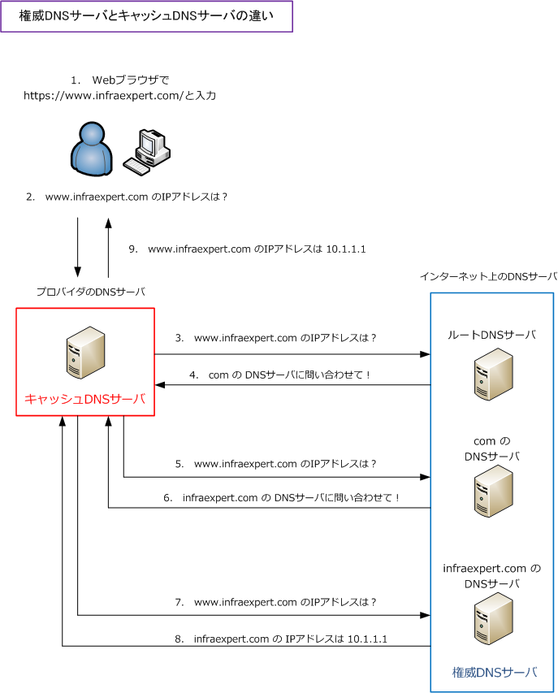

authoritative DNS server / cache DNS server
権威DNSサーバとは
権威DNSサーバは、ドメイン名とIPアドレスが対応づけられたゾーン情報を保持して、他のDNSサーバに 問い合わせることなく応答を返せるDNSサーバのことです。権威DNSサーバは自身が管理するゾーン情報と 委任先の権威サーバに関する情報を保持し、名前解決の問い合わせには自身が管理する情報のみ応答します。
キャッシュDNSサーバとは
キャッシュDNSサーバは、LAN内のWebクライアントから問い合わせを受け、代わりにインターネットへ 問い合わせるDNSサーバのことです。Webクライアントからドメイン名に対する名前解決の問い合わせを 受け付けて、該当するドメイン名を管理する権威DNSサーバに問い合わせをしていきます。そして、その ドメイン名に対応するIPアドレス情報をクライアントへ応答して、問い合わせた結果はキャッシュします。

権威DNSサーバとキャッシュDNSサーバの違い
権威DNSサーバとキャッシュDNSサーバの違いは以下の通りです。なお、権威DNSサーバは別名として DNSコンテンツサーバと呼ばれ、キャッシュDNSサーバはDNSキャッシュサーバとも呼ばれています。 現在、皆さんがPC、スマホ、タブレットなどで指定しているDNSサーバはキャッシュDNSサーバです。
| 2種類のDNSサーバ | 別名 | 役割 |
|---|---|---|
| 権威DNSサーバ | DNSコンテンツサーバ | ・ ドメイン名とIPアドレスの対応表を「ゾーン」という単位で管理。 ・ 名前解決の問い合わせをされた際、自信が管理する情報のみ応答。 |
| キャッシュDNSサーバ | DNSキャッシュサーバ | ・ クライアントからドメイン名の名前解決の問い合わせを受ける。 ・ 該当するドメイン名を管理する権威DNSサーバに問い合わせる。 ・ 名前解決された問い合わせ結果は、一定期間キャッシュする。 ・ 名前解決の問い合わせが同じ内容であればキャッシュ情報を使用。 |
権威DNSサーバ：プライマリDNSサーバとセカンダリDNSサーバ
権威DNSサーバにはプライマリDNSサーバとセカンダリDNSサーバの2種類あり、プライマリDNSサーバは セカンダリDNSサーバに定期的にゾーン情報を転送して同期を取ります。このことをゾーン転送と言います。
| 権威DNSサーバ | 説明 |
|---|---|
| プライマリDNSサーバ | ゾーン情報のマスターデータを管理するDNSサーバ |
| セカンダリDNSサーバ | プライマリDNSサーバからゾーン情報の複製を受け取り、プライマリが応答しない時に代理で応答 |
キャッシュDNSサーバ：優先DNSサーバと代替DNSサーバ
パソコンなどのネットワーク設定には、クライアントがDNSによる名前解決を行う場合にどのDNSサーバを 優先して問い合わせするのかの設定項目（優先DNSサーバと代替DNSサーバ）があります。クライアントが 最初に問い合わせるDNSサーバは優先DNSサーバであり、優先DNSサーバが応答しない際にクライアントが 問い合わせるのが代替DNSサーバです。DHCP環境であれば、通常は自動的に割り当てられることが多いです。 ※ PCの「優先DNSサーバ、代替DNSサーバ」設定に入力するDNSサーバのIPアドレスは、キャッシュDNSサーバのIPアドレスです。
| キャッシュDNSサーバ | 説明 |
|---|---|
| 優先DNSサーバ | クライアントから、DNSによる名前解決の最初の問い合わせ先となるキャッシュDNSサーバ |
| 代替DNSサーバ | 優先DNSサーバが応答しない際に、クライアントの問い合わせ先となるキャッシュDNSサーバ |